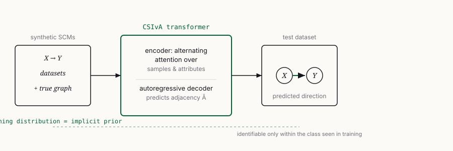
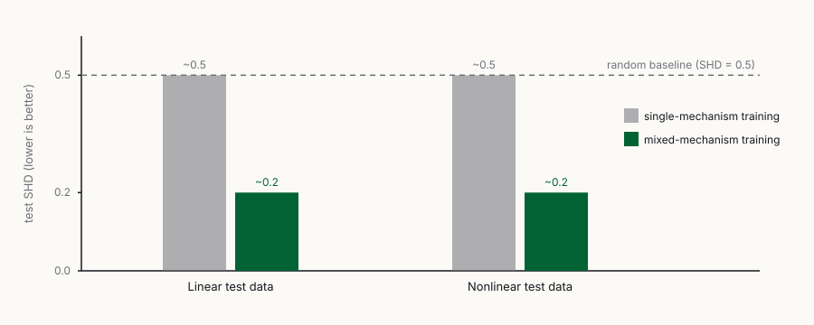

Demystifying Amortized Causal Discovery with Transformers
Why supervised causal discovery still obeys identifiability theory — the training distribution is the prior
Supervised learning for causal discovery often performs well while seemingly sidestepping the assumptions classical methods need for identifiability. This work analyzes CSIvA — a transformer for amortized inference — on bivariate causal models and shows that the training distribution implicitly defines a prior on the causal model of the test data. Good performance is achieved exactly when that prior is good and the underlying model is identifiable. CSIvA fails to generalize to classes of causal models unseen in training; the authors show theoretically and empirically when training on mixtures of identifiable models with different structural assumptions restores generalization. Amortized causal discovery with transformers therefore still adheres to identifiability theory.
The puzzle
Causal discovery aims to recover the causal relationships between variables of a system from pure observations. It is inherently ill-posed: uniquely identifying the direction of a causal edge requires restrictive assumptions on the class of structural causal models (SCMs) that generated the data (Shimizu et al. 2006; Hoyer et al. 2008; Zhang and Hyvärinen 2009), and those assumptions are usually untestable in practice.
Recently, supervised learning methods trained on synthetic data have been proposed to sidestep these hand-crafted conditions (Ke et al. 2023; Lopez-Paz et al. 2015; Li et al. 2020; Lippe et al. 2022; Lorch et al. 2022). They perform surprisingly well on synthetic benchmarks, yet come with no theoretical guarantee. This is puzzling: a pair of non-identifiable SCMs can have different causal DAGs \mathcal{G} \neq \tilde{\mathcal{G}} while entailing the same joint distribution p. How could a learner presented only with samples from p overcome that theoretical limit?
This paper analyzes one such method — CSIvA (Causal Structure Induction via Attention) (Ke et al. 2023) — through the lens of identifiability theory, focusing on bivariate graphs as a controlled but non-trivial setting.1
1 The authors argue the findings extend to the multivariate setting: identifiability of multivariate additive noise models can be guaranteed by verifying that the causal order of every bivariate subgraph is individually identifiable (a result they attribute to Peters et al., 2014).
What CSIvA is
CSIvA is a transformer (Vaswani et al. 2017) adapted for tabular causal data. Because data for causal discovery are not sequential, its encoder uses alternating attention (Kossen et al. 2021): each layer alternates attention across the attributes of a single sample (encoding relationships between variables) and across the samples of a single node (encoding that node’s value distribution). An autoregressive decoder then emits the predicted adjacency matrix entry by entry. The model is trained by maximum likelihood to approximate \hat{p}(\mathcal{G} \mid \mathcal{D}; \Theta), the conditional distribution over graphs given a dataset \mathcal{D}.

The key tension the paper formalizes: in the infinite-sample regime CSIvA targets p(\cdot \mid \mathcal{D}), the conditional distribution over graphs. Without restrictions on the SCM, the graphs X \to Y and Y \to X are equally likely under the joint density p_{X,Y}, so the model can at most identify the equivalence class. With prior knowledge that the data come from, say, an additive noise model, p(\cdot \mid \mathcal{D}, \mathrm{ANM}) instead concentrates all mass on the single true graph \mathcal{G}^\*.
A structural causal model, briefly
The variables X follow structural equations X_i \coloneqq f_i(X_{\mathrm{Pa}^{\mathcal{G}}_i}, N_i) with independent noise terms N_i. The paper studies identifiable special cases: the LiNGAM (linear mechanisms, non-Gaussian noise) (Shimizu et al. 2006), the nonlinear additive noise model (ANM) (Hoyer et al. 2008), and the post-nonlinear (PNL) model (Zhang and Hyvärinen 2009),
X_i \coloneqq f_{2,i}\!\left(f_{1,i}(X_{\mathrm{Pa}^{\mathcal{G}}_i}) + N_i\right),
with f_{2,i} invertible. A central theoretical contribution is showing that the set of distributions generated by a non-identifiable post-ANM is negligible — combining the additive-noise result of (Hoyer et al. 2008) with the post-nonlinear characterization of (Zhang and Hyvärinen 2009) — so the post-ANM is generally identifiable. This is what justifies training on mixtures of identifiable models.
Experimental setup
The metric is structural Hamming distance (SHD): for a bivariate graph with a single edge this is just an error count, so \mathrm{SHD}=0 is a correct prediction and \mathrm{SHD}=1 is wrong. A coin-flip baseline achieves \mathrm{SHD}=0.5 in expectation. Unless stated otherwise, CSIvA is trained on 15000 synthetic datasets of 1500 i.i.d. observations each. All data are standardized by their empirical variance to remove learnable shortcuts. The experimental findings rest on roughly 1M test runs.
Hyperparameters (from the paper): hidden state 64, 8 encoder and 8 decoder transformer layers, 8 attention heads, Adam at learning rate 10^{-4}, batch size 5, fewer than 150000 iterations.
Three findings
1. CSIvA generalizes in-distribution but not out-of-distribution. When tested on the same class of SCM it was trained on, CSIvA reaches SHD close to zero, comparable to dedicated baselines (DirectLiNGAM (Shimizu et al. 2011) on linear data, NoGAM (Montagna et al. 2023) on nonlinear ANM) — confirming the implementation is non-trivial. But across unseen mechanism types its SHD approaches the random baseline, and generalization across unseen noise distributions is unreliable and hard to predict. The authors note these systematic OOD experiments are novel: they are absent from prior work on amortized discovery.
2. CSIvA obeys identifiability theory. Using an example adapted from (Hoyer et al. 2008) — a forward linear-Gumbel model that is LiNGAM-identifiable, yet admits a backward nonlinear additive-noise model with the same joint density — the paper shows CSIvA behaves exactly as the theory predicts. Trained only on the forward model, it recovers the correct direction; trained only on the backward model, likewise. Trained on a 50:50 mixture of the two (which makes the pair non-identifiable), its test SHD sits around 0.5, no better than a coin flip. Trained and tested on linear-Gaussian data — known to be non-identifiable — no learned model beats the random baseline either. The class of SCMs CSIvA can identify is therefore determined by the SCMs seen in training. This directly contradicts the hypothesis of (Lopez-Paz et al. 2015) that supervised learning could exceed the boundaries of identifiability.
3. Training on mixtures of identifiable models restores generalization. Since the post-ANM is generally identifiable, one can train on a mixture of identifiable SCMs with different structural assumptions. Training on mixtures of mechanism types (linear, nonlinear, post-nonlinear), with the dataset budget fixed at 15000 and split equally across mechanisms, always improves test SHD over single-mechanism training (Figure 2). Training on mixtures of noise distributions (beta, gamma, gumbel, exponential, mlp, uniform) yields a model essentially agnostic to the test noise distribution.

The paper reports these mixture improvements qualitatively: learning on multiple mechanisms improves SHD from roughly 0.5 to roughly 0.2 on both linear and nonlinear test data, with even better accuracy on post-nonlinear samples. Mixing over noise distributions yields SHD below 0.1, with the mlp noise an exception (about 0.2 average SHD on linear and nonlinear data).
| Training regime | Linear test SHD | Nonlinear test SHD |
|---|---|---|
| Single mechanism | ~ 0.5 | ~ 0.5 |
| Mixed mechanisms | ~ 0.2 | ~ 0.2 |
| Random baseline | 0.5 | 0.5 |
A new trade-off
There is a catch. It is easier to encode prior assumptions about mechanism classes (linear, nonlinear, post-nonlinear) than about noise distributions, which are potentially infinite. Classical methods such as RESIT and NoGAM (Peters et al. 2014; Montagna et al. 2023) need no assumptions on the noise type but work only for a limited class of mechanisms. Training on mixtures offers the opposite balance — less reliant on mechanism assumptions — but incorporating all possible noise distributions into the training data is practically impossible.
Conclusion
Consistent with classical algorithms, amortized causal discovery achieves good performance when (i) there is a good prior on the SCM generating the test data and (ii) the setting is identifiable — and for a learner that prior lives in the choice of training data. Far from escaping identifiability theory, transformers for causal discovery still answer to it; the contribution is to make that connection precise and to turn it into a practical recipe (train on mixtures of identifiable models) for broader generalization.
Citation
@article{montagna2025,
author = {Montagna, Francesco and Cairney-Leeming, Max and Sridhar,
Dhanya and Locatello, Francesco},
title = {Demystifying {Amortized} {Causal} {Discovery} with
{Transformers}},
journal = {Transactions on Machine Learning Research},
date = {2025-12-18},
url = {https://openreview.net/forum?id=9Lgy7IGSfp}
}